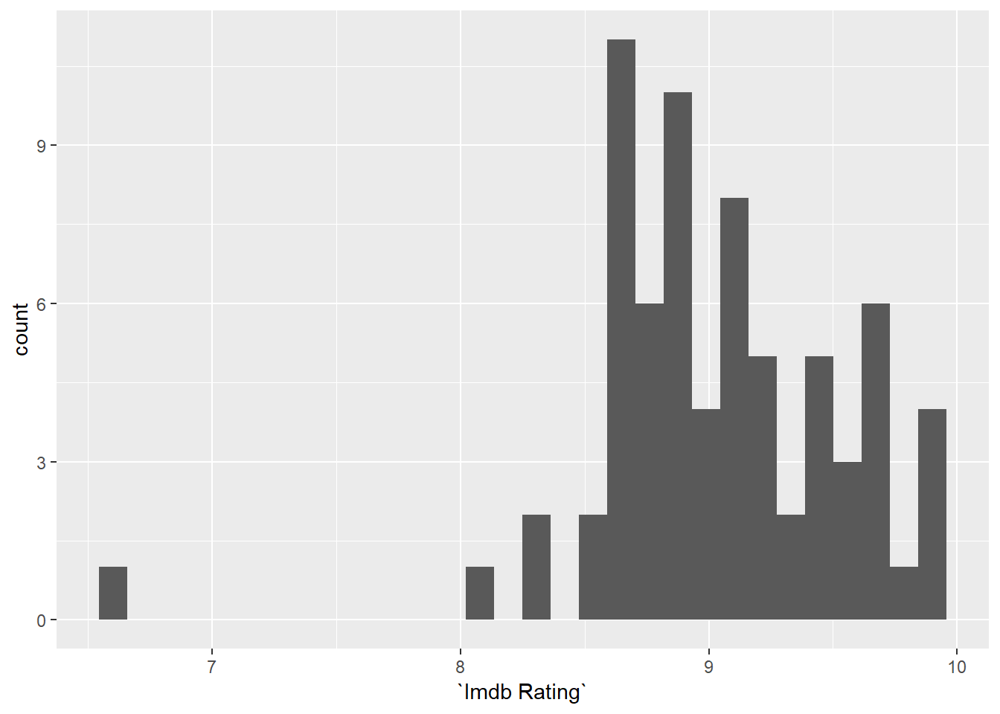

1 Valoraciones imdb.com
En esta parte vamos a echar un vistazo a las valoraciones de los capítulos de Juego de Tronos de los usuarios de imdb.com.
Las valoraciones de los tres primeros capítulos de la temporada 8 (8,3, 8,6 y 8,3) ya estaban por debajo del promedio histórico de la serie, pero es que la valoración del cuarto episodio ahora mismo es de 6,7 (con más de 60.000 valoraciones), un auténtico batacazo para este serie y para HBO.
Inicialmente lo que vamos a hacer es simplemente visualizar en un gráfico lo lejos que está la puntuación de este caítulo del resto de episodios de Juego de Tronos.
Cargamos primero los paquetes necesarios para el análisis. Opto esta vez por cargar directamente la librería tidyverse y su universo de paquetes.
library(tidyverse)Los datos los he descargado de este [proyecto de Kaggle] (https://www.kaggle.com/dasbootstrapping/game-of-thrones-episode-data#got_csv.csv). Muchas gracias, dasbootstrapping por publicar este dataset.
Lo único que he hecho ha sido revisar los valores de los promedios que estaban ya en la tabla (algunos promedios han cambiado mínimamente) e incluir las valoraciones de los 4 primeros capítulos de la temporada 8 con sus correspondientes valoraciones. La fecha de obtención de estos datos de imdb.com es el 2019-05-09.
Importamos la tabla:
original_dataset <- read_csv('data/got_csv_ratings_updated_2019-05-09.csv', locale = locale(encoding = "ISO-8859-1"))Nos quedamos únicamente con los campos que vamos a utilizar:
got_ratings <- original_dataset %>% select(Season,
"Episode Number",
"Episode Name",
"Imdb Rating")Echamos un vistazo a la distribución de las valoraciones con un histograma.
ggplot(got_ratings, aes(x = `Imdb Rating`)) +
geom_histogram() El “hueco” entre la valoración más baja que existía hasta ahora y la del episodio 8x04 es tremendo, 1,3 puntos.
Lo vemos también con todas las valoraciones representadas en un nube de puntos.
ggplot(got_ratings, aes(x = `Episode Number`, y = `Imdb Rating`)) +
geom_point()No hay precedente, ni punto cercano, a la la valoración de este episodio. Lo que está por determinar es si los dos últimos capítulos seguirán en esta línea o recuperarán, por lo menos en parte, el favor del público.
Un detalle de la evolución de las valoraciones que se observa a simple vista en este último gráfico es la creciente variabilidad en las valoraciones. Sigue habiendo capítulos muy bien valorados (no en la presente temporada), incluso mejor valorados que cualquier episodio de las primeras temporadas, pero también aparecen cada vez más capítulos en el entorno del 8,5, a partir del cual ya podríamos decir que es un episodio “flojito” de esta serie.